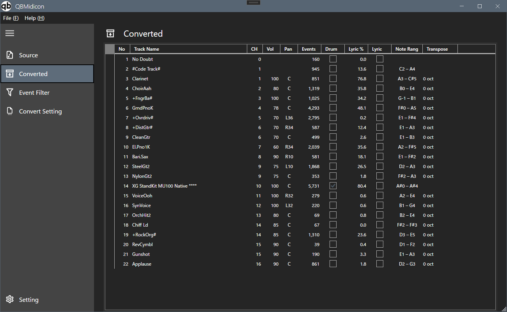

Displays a list of converted tracks that reflects the contents of Event Filter and Convert Setting Select a

screen item
| Item | Description |
|---|---|
| No | Track number |
| Track Name | Track name |
| CH | MIDI channel |
| Vol | Volume value of the track |
| Pan | Pan value of the track |
| Events | Number of events in the track |
| Drum | Determine and specify whether it is a drum track |
| Lyric % | This is the percentage that shows how much the MIDI data (notes) of the track match the lyric events |
| Lyric | Presence/content of lyric data |
| Note Rang | Range of notes used in the track |
| Transpose | Transposition amount for each track |